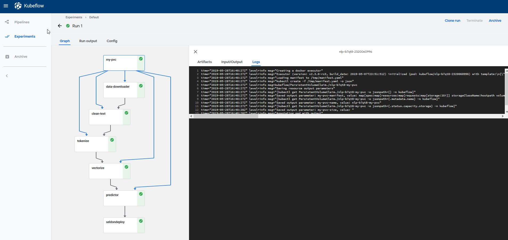
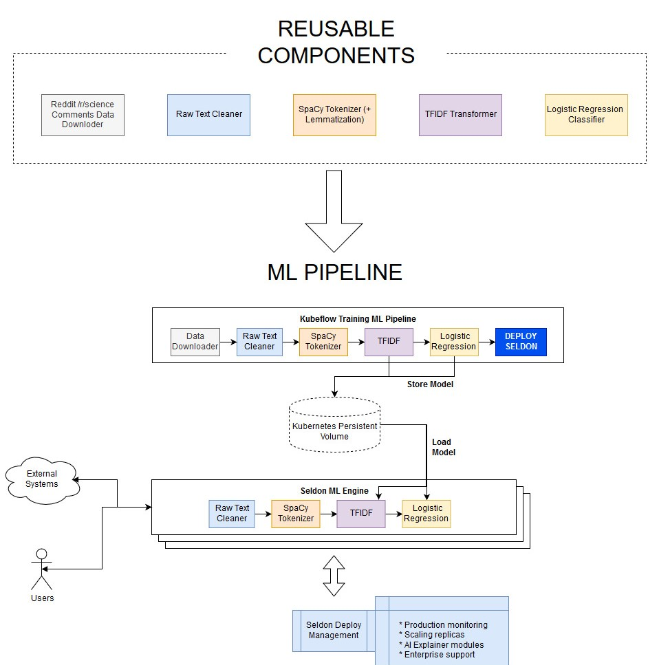
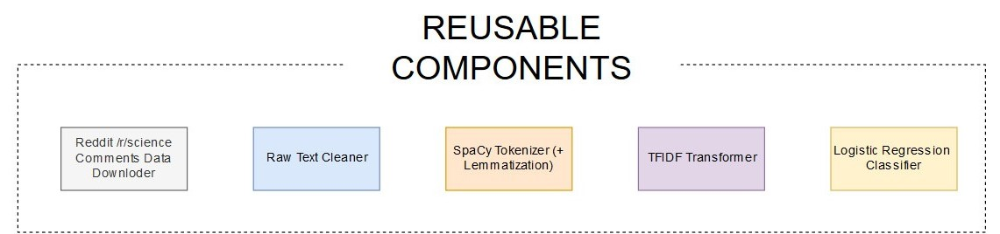
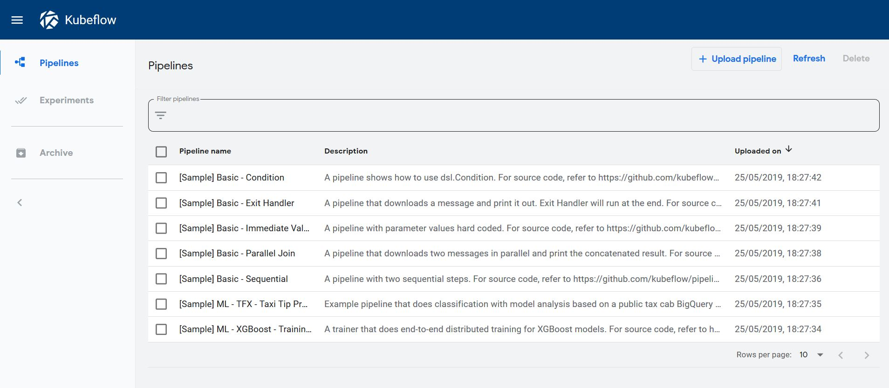
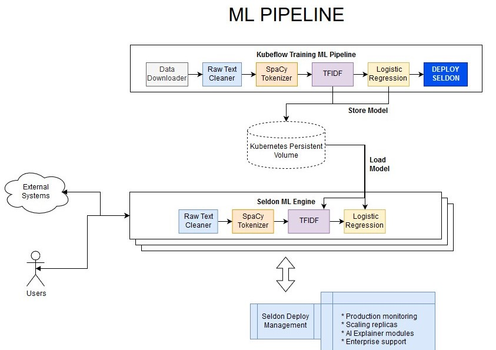
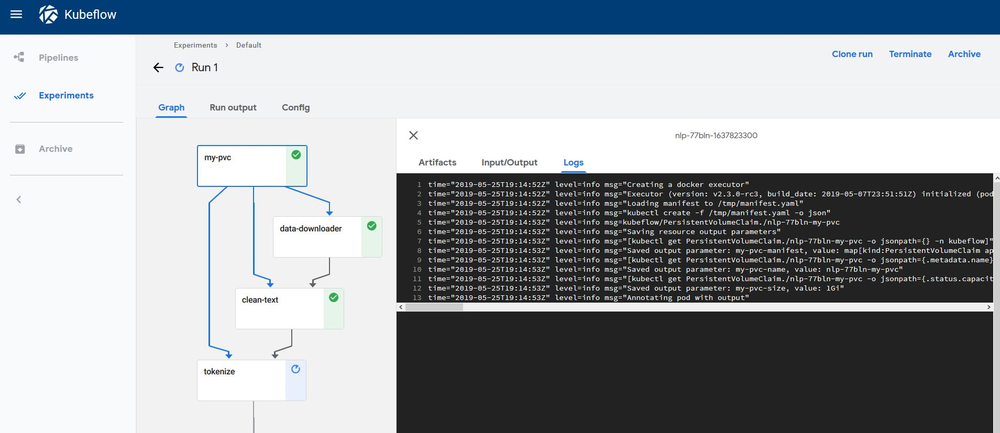
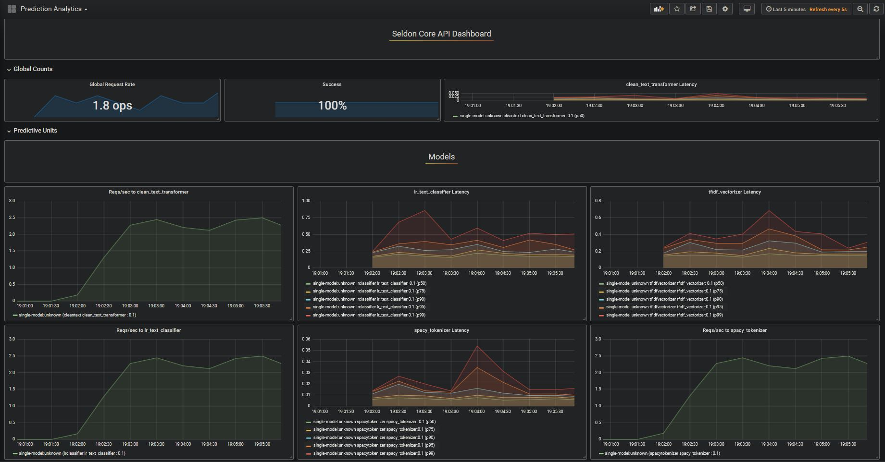

This page was generated from examples/kubeflow/kubeflow_seldon_e2e_pipeline.ipynb.
End-to-end Reusable ML Pipeline with Seldon and Kubeflow¶
In this example we showcase how to build re-usable components to build an ML pipeline that can be trained and deployed at scale.
We will automate content moderation on the Reddit comments in /r/science building a machine learning NLP model with the following components:

This tutorial will break down in the following sections:
Test and build all our reusable pipeline steps
Use Kubeflow to Train the Pipeline and Deploy to Seldon
Test Seldon Deployed ML REST Endpoints
Visualise Seldon’s Production ML Pipelines
Before you start¶
Make sure you have the following components set-up and running in your Kubernetes cluster:
Seldon Core installed with an ingress (Ambassador / Istio) set up
Kubeflow Pipelines version 1.0.0 Standalone set up
Let’s get started! 🚀🔥 We will be building the end-to-end pipeline below:

[17]:
%%writefile requirements-dev.txt
python-dateutil==2.8.1
kfp==1.0.0
kubernetes==11.0.0
click==7.1.2
seldon_core==1.2.3
numpy==1.19.1
pandas==1.1.1
spacy==2.3.2
scikit-learn==0.23.2
en-core-web-sm==2.3.1
Overwriting requirements-dev.txt
[ ]:
!pip install -r requirements-dev.txt
1) Test and build all our reusable pipeline steps¶
We will start by building each of the components in our ML pipeline.

Let’s first have a look at our clean_text step:¶
[4]:
!ls pipeline/pipeline_steps
clean_text lr_text_classifier tfidf_vectorizer
data_downloader spacy_tokenize
Like in this step, all of the other steps can be found in the pipeline/pipeline_steps/ folder, and all have the following structure: * pipeline_step.py which exposes the functionality through a CLI * Transformer.py which transforms the data accordingly * requirements.txt which states the python dependencies to run * build_image.sh which uses s2i to build the image with one line
Let’s check out the CLI for clean_text¶
The pipeline_step CLI is the entry point for the kubeflow image as it will be able to pass any relevant parameters
[6]:
!python pipeline/pipeline_steps/clean_text/pipeline_step.py --help
Usage: pipeline_step.py [OPTIONS]
Options:
--in-path TEXT
--out-path TEXT
--help Show this message and exit.
This is actually a very simple file, as we are using the click library to define the commands:
[7]:
!cat pipeline/pipeline_steps/clean_text/pipeline_step.py
import dill
import click
import dill
try:
# Running for tests
from .Transformer import Transformer
except:
# Running from CLI
from Transformer import Transformer
@click.command()
@click.option('--in-path', default="/mnt/raw_text.data")
@click.option('--out-path', default="/mnt/clean_text.data")
def run_pipeline(in_path, out_path):
clean_text_transformer = Transformer()
with open(in_path, 'rb') as in_f:
x = dill.load(in_f)
y = clean_text_transformer.predict(x)
with open(out_path, "wb") as out_f:
dill.dump(y, out_f)
if __name__ == "__main__":
run_pipeline()
The Transformer is where the data munging and transformation stage comes in, which will be wrapped by the container and exposed through the Seldon Engine to ensure our pipeline can be used in production.
Seldon provides multiple different features, such as abilities to send custom metrics, pre-process / post-process data and more. In this example we will only be exposing the predict step.
[8]:
!cat pipeline/pipeline_steps/clean_text/Transformer.py
import re
from html.parser import HTMLParser
import numpy as np
import logging
class Transformer():
__html_parser = HTMLParser()
__uplus_pattern = \
re.compile("\<[uU]\+(?P<digit>[a-zA-Z0-9]+)\>")
__markup_link_pattern = \
re.compile("\[(.*)\]\((.*)\)")
def predict(self, X, feature_names=[]):
logging.warning(X)
f = np.vectorize(Transformer.transform_clean_text)
X_clean = f(X)
logging.warning(X_clean)
return X_clean
def fit(self, X, y=None, **fit_params):
return self
@staticmethod
def transform_clean_text(raw_text):
try:
decoded = raw_text.encode("ISO-8859-1").decode("utf-8")
except:
decoded = raw_text.encode("ISO-8859-1").decode("cp1252")
html_unescaped =Transformer.\
__html_parser.unescape(decoded)
html_unescaped = re.sub(r"\r\n", " ", html_unescaped)
html_unescaped = re.sub(r"\r\r\n", " ", html_unescaped)
html_unescaped = re.sub(r"\r", " ", html_unescaped)
html_unescaped = html_unescaped.replace(">", " > ")
html_unescaped = html_unescaped.replace("<", " < ")
html_unescaped = html_unescaped.replace("--", " - ")
html_unescaped = Transformer.__uplus_pattern.sub(
" U\g<digit> ", html_unescaped)
html_unescaped = Transformer.__markup_link_pattern.sub(
" \1 \2 ", html_unescaped)
html_unescaped = html_unescaped.replace("\\", "")
return html_unescaped
If you want to understand how the CLI pipeline talks to each other, have a look at the end to end test in pipeline/pipeline_tests/:
[18]:
!pytest ./pipeline/pipeline_tests/. --disable-pytest-warnings
Test session starts (platform: linux, Python 3.7.4, pytest 6.0.1, pytest-sugar 0.9.4)
rootdir: /home/alejandro/Programming/kubernetes/seldon/seldon-core/examples/kubeflow
plugins: celery-4.4.0, flaky-3.6.1, cov-2.10.0, django-3.8.0, forked-1.1.3, sugar-0.9.4, xdist-1.30.0
collecting ...
pipeline/pipeline_tests/test_pipeline.py ✓ 100% ██████████
Results (2.12s):
1 passed
To build the image we provide a build script in each of the steps that contains the instructions:
[19]:
!cat pipeline/pipeline_steps/clean_text/build_image.sh
#!/bin/bash
s2i build . seldonio/seldon-core-s2i-python3:1.14.0 clean_text_transformer:0.1
The only thing you need to make sure is that Seldon knows how to wrap the right model and file.
This can be achieved with the s2i/environment file.
As you can see, here we just tell it we want it to use our Transformer.py file:
[44]:
!cat pipeline/pipeline_steps/clean_text/.s2i/environment
MODEL_NAME=Transformer
API_TYPE=REST
SERVICE_TYPE=MODEL
PERSISTENCE=0
Once this is defined, the only thing we need to do is to run the build_image.sh for all the reusable components.
Here we show the manual way to do it:
[25]:
%%bash
# we must be in the same directory
cd pipeline/pipeline_steps/clean_text/ && ./build_image.sh
cd ../data_downloader && ./build_image.sh
cd ../lr_text_classifier && ./build_image.sh
cd ../spacy_tokenize && ./build_image.sh
cd ../tfidf_vectorizer && ./build_image.sh
Sending build context to Docker daemon 9.728kB
Step 1/4 : FROM python:3.7-slim
---> d3fbf7fff365
Step 2/4 : COPY . /microservice
---> Using cache
---> 6e9d7e162536
Step 3/4 : WORKDIR /microservice
---> Using cache
---> b3d69a634dd1
Step 4/4 : RUN pip install -r requirements.txt
---> Using cache
---> f1c421a68fe7
Successfully built f1c421a68fe7
Successfully tagged data_downloader:0.1
---> Installing application source...
---> Installing dependencies ...
Looking in links: /whl
Collecting dill==0.3.2 (from -r requirements.txt (line 1))
WARNING: Url '/whl' is ignored. It is either a non-existing path or lacks a specific scheme.
Downloading https://files.pythonhosted.org/packages/e2/96/518a8ea959a734b70d2e95fef98bcbfdc7adad1c1e5f5dd9148c835205a5/dill-0.3.2.zip (177kB)
Requirement already satisfied: click==7.1.2 in /opt/conda/lib/python3.7/site-packages (from -r requirements.txt (line 2)) (7.1.2)
Requirement already satisfied: numpy==1.19.1 in /opt/conda/lib/python3.7/site-packages (from -r requirements.txt (line 3)) (1.19.1)
Building wheels for collected packages: dill
Building wheel for dill (setup.py): started
Building wheel for dill (setup.py): finished with status 'done'
Created wheel for dill: filename=dill-0.3.2-cp37-none-any.whl size=78913 sha256=9f9ec39fffe7a46bdc1a164bc0cd8d61201f04ff0c4bfc68e7dda78d6a4c29cf
Stored in directory: /root/.cache/pip/wheels/27/4b/a2/34ccdcc2f158742cfe9650675560dea85f78c3f4628f7daad0
Successfully built dill
Installing collected packages: dill
Successfully installed dill-0.3.2
WARNING: Url '/whl' is ignored. It is either a non-existing path or lacks a specific scheme.
Collecting pip-licenses
Downloading https://files.pythonhosted.org/packages/c5/50/6c4b4e69a0c43bd9f03a30579695093062ba72da4e3e4026cd2144dbcc71/pip_licenses-2.3.0-py3-none-any.whl
Collecting PTable (from pip-licenses)
Downloading https://files.pythonhosted.org/packages/ab/b3/b54301811173ca94119eb474634f120a49cd370f257d1aae5a4abaf12729/PTable-0.9.2.tar.gz
Building wheels for collected packages: PTable
Building wheel for PTable (setup.py): started
Building wheel for PTable (setup.py): finished with status 'done'
Created wheel for PTable: filename=PTable-0.9.2-cp37-none-any.whl size=22906 sha256=6c6c94080f12738603dbd55c01213f1c28f9922c915c92d72b547e85d229bfba
Stored in directory: /root/.cache/pip/wheels/22/cc/2e/55980bfe86393df3e9896146a01f6802978d09d7ebcba5ea56
Successfully built PTable
Installing collected packages: PTable, pip-licenses
Successfully installed PTable-0.9.2 pip-licenses-2.3.0
created path: ./licenses/license_info.csv
created path: ./licenses/license.txt
Build completed successfully
---> Installing application source...
---> Installing dependencies ...
Looking in links: /whl
Collecting dill==0.3.2 (from -r requirements.txt (line 1))
WARNING: Url '/whl' is ignored. It is either a non-existing path or lacks a specific scheme.
Downloading https://files.pythonhosted.org/packages/e2/96/518a8ea959a734b70d2e95fef98bcbfdc7adad1c1e5f5dd9148c835205a5/dill-0.3.2.zip (177kB)
Requirement already satisfied: click==7.1.2 in /opt/conda/lib/python3.7/site-packages (from -r requirements.txt (line 2)) (7.1.2)
Requirement already satisfied: numpy==1.19.1 in /opt/conda/lib/python3.7/site-packages (from -r requirements.txt (line 3)) (1.19.1)
Collecting scikit-learn==0.23.2 (from -r requirements.txt (line 4))
WARNING: Url '/whl' is ignored. It is either a non-existing path or lacks a specific scheme.
Downloading https://files.pythonhosted.org/packages/f4/cb/64623369f348e9bfb29ff898a57ac7c91ed4921f228e9726546614d63ccb/scikit_learn-0.23.2-cp37-cp37m-manylinux1_x86_64.whl (6.8MB)
Collecting scipy>=0.19.1 (from scikit-learn==0.23.2->-r requirements.txt (line 4))
WARNING: Url '/whl' is ignored. It is either a non-existing path or lacks a specific scheme.
Downloading https://files.pythonhosted.org/packages/65/f9/f7a7e5009711579c72da2725174825e5056741bf4001815d097eef1b2e17/scipy-1.5.2-cp37-cp37m-manylinux1_x86_64.whl (25.9MB)
Collecting joblib>=0.11 (from scikit-learn==0.23.2->-r requirements.txt (line 4))
WARNING: Url '/whl' is ignored. It is either a non-existing path or lacks a specific scheme.
Downloading https://files.pythonhosted.org/packages/51/dd/0e015051b4a27ec5a58b02ab774059f3289a94b0906f880a3f9507e74f38/joblib-0.16.0-py3-none-any.whl (300kB)
Collecting threadpoolctl>=2.0.0 (from scikit-learn==0.23.2->-r requirements.txt (line 4))
WARNING: Url '/whl' is ignored. It is either a non-existing path or lacks a specific scheme.
Downloading https://files.pythonhosted.org/packages/f7/12/ec3f2e203afa394a149911729357aa48affc59c20e2c1c8297a60f33f133/threadpoolctl-2.1.0-py3-none-any.whl
Building wheels for collected packages: dill
Building wheel for dill (setup.py): started
Building wheel for dill (setup.py): finished with status 'done'
Created wheel for dill: filename=dill-0.3.2-cp37-none-any.whl size=78913 sha256=f4aa43d7acbc7953839cc8177c0e03bec249f9a7dffc10c7e9db79201ce519d3
Stored in directory: /root/.cache/pip/wheels/27/4b/a2/34ccdcc2f158742cfe9650675560dea85f78c3f4628f7daad0
Successfully built dill
Installing collected packages: dill, scipy, joblib, threadpoolctl, scikit-learn
Successfully installed dill-0.3.2 joblib-0.16.0 scikit-learn-0.23.2 scipy-1.5.2 threadpoolctl-2.1.0
WARNING: Url '/whl' is ignored. It is either a non-existing path or lacks a specific scheme.
Collecting pip-licenses
Downloading https://files.pythonhosted.org/packages/c5/50/6c4b4e69a0c43bd9f03a30579695093062ba72da4e3e4026cd2144dbcc71/pip_licenses-2.3.0-py3-none-any.whl
Collecting PTable (from pip-licenses)
Downloading https://files.pythonhosted.org/packages/ab/b3/b54301811173ca94119eb474634f120a49cd370f257d1aae5a4abaf12729/PTable-0.9.2.tar.gz
Building wheels for collected packages: PTable
Building wheel for PTable (setup.py): started
Building wheel for PTable (setup.py): finished with status 'done'
Created wheel for PTable: filename=PTable-0.9.2-cp37-none-any.whl size=22906 sha256=e296b386d6581fe3343b84d718f7e7624bdbabfff569c4220a1f2039dd0abbdf
Stored in directory: /root/.cache/pip/wheels/22/cc/2e/55980bfe86393df3e9896146a01f6802978d09d7ebcba5ea56
Successfully built PTable
Installing collected packages: PTable, pip-licenses
Successfully installed PTable-0.9.2 pip-licenses-2.3.0
created path: ./licenses/license_info.csv
created path: ./licenses/license.txt
Build completed successfully
---> Installing application source...
---> Installing dependencies ...
Looking in links: /whl
Collecting dill==0.3.2 (from -r requirements.txt (line 1))
WARNING: Url '/whl' is ignored. It is either a non-existing path or lacks a specific scheme.
Downloading https://files.pythonhosted.org/packages/e2/96/518a8ea959a734b70d2e95fef98bcbfdc7adad1c1e5f5dd9148c835205a5/dill-0.3.2.zip (177kB)
Requirement already satisfied: click==7.1.2 in /opt/conda/lib/python3.7/site-packages (from -r requirements.txt (line 2)) (7.1.2)
Requirement already satisfied: numpy==1.19.1 in /opt/conda/lib/python3.7/site-packages (from -r requirements.txt (line 3)) (1.19.1)
Collecting spacy==2.3.2 (from -r requirements.txt (line 4))
WARNING: Url '/whl' is ignored. It is either a non-existing path or lacks a specific scheme.
Downloading https://files.pythonhosted.org/packages/55/24/70c615f5b22440c679a4132b81eee67d1dfd70d159505a28ff949c78a1ac/spacy-2.3.2-cp37-cp37m-manylinux1_x86_64.whl (9.9MB)
Collecting en-core-web-sm==2.3.1 (from -r requirements.txt (line 5))
WARNING: Url '/whl' is ignored. It is either a non-existing path or lacks a specific scheme.
ERROR: Could not find a version that satisfies the requirement en-core-web-sm==2.3.1 (from -r requirements.txt (line 5)) (from versions: none)
ERROR: No matching distribution found for en-core-web-sm==2.3.1 (from -r requirements.txt (line 5))
WARNING: Url '/whl' is ignored. It is either a non-existing path or lacks a specific scheme.
Build failed
ERROR: An error occurred: non-zero (13) exit code from seldonio/seldon-core-s2i-python37:1.14.0
---> Installing application source...
---> Installing dependencies ...
Looking in links: /whl
Collecting dill==0.3.2 (from -r requirements.txt (line 1))
WARNING: Url '/whl' is ignored. It is either a non-existing path or lacks a specific scheme.
Downloading https://files.pythonhosted.org/packages/e2/96/518a8ea959a734b70d2e95fef98bcbfdc7adad1c1e5f5dd9148c835205a5/dill-0.3.2.zip (177kB)
Requirement already satisfied: click==7.1.2 in /opt/conda/lib/python3.7/site-packages (from -r requirements.txt (line 2)) (7.1.2)
Requirement already satisfied: numpy==1.19.1 in /opt/conda/lib/python3.7/site-packages (from -r requirements.txt (line 3)) (1.19.1)
Collecting scikit-learn==0.23.2 (from -r requirements.txt (line 4))
WARNING: Url '/whl' is ignored. It is either a non-existing path or lacks a specific scheme.
Downloading https://files.pythonhosted.org/packages/f4/cb/64623369f348e9bfb29ff898a57ac7c91ed4921f228e9726546614d63ccb/scikit_learn-0.23.2-cp37-cp37m-manylinux1_x86_64.whl (6.8MB)
Collecting joblib>=0.11 (from scikit-learn==0.23.2->-r requirements.txt (line 4))
WARNING: Url '/whl' is ignored. It is either a non-existing path or lacks a specific scheme.
Downloading https://files.pythonhosted.org/packages/51/dd/0e015051b4a27ec5a58b02ab774059f3289a94b0906f880a3f9507e74f38/joblib-0.16.0-py3-none-any.whl (300kB)
Collecting scipy>=0.19.1 (from scikit-learn==0.23.2->-r requirements.txt (line 4))
WARNING: Url '/whl' is ignored. It is either a non-existing path or lacks a specific scheme.
Downloading https://files.pythonhosted.org/packages/65/f9/f7a7e5009711579c72da2725174825e5056741bf4001815d097eef1b2e17/scipy-1.5.2-cp37-cp37m-manylinux1_x86_64.whl (25.9MB)
Collecting threadpoolctl>=2.0.0 (from scikit-learn==0.23.2->-r requirements.txt (line 4))
WARNING: Url '/whl' is ignored. It is either a non-existing path or lacks a specific scheme.
Downloading https://files.pythonhosted.org/packages/f7/12/ec3f2e203afa394a149911729357aa48affc59c20e2c1c8297a60f33f133/threadpoolctl-2.1.0-py3-none-any.whl
Building wheels for collected packages: dill
Building wheel for dill (setup.py): started
Building wheel for dill (setup.py): finished with status 'done'
Created wheel for dill: filename=dill-0.3.2-cp37-none-any.whl size=78913 sha256=2bdafea9bf8ead275cf6123cd330c7362915943a397e00ca7b203b9b8759f2a7
Stored in directory: /root/.cache/pip/wheels/27/4b/a2/34ccdcc2f158742cfe9650675560dea85f78c3f4628f7daad0
Successfully built dill
Installing collected packages: dill, joblib, scipy, threadpoolctl, scikit-learn
Successfully installed dill-0.3.2 joblib-0.16.0 scikit-learn-0.23.2 scipy-1.5.2 threadpoolctl-2.1.0
WARNING: Url '/whl' is ignored. It is either a non-existing path or lacks a specific scheme.
Collecting pip-licenses
Downloading https://files.pythonhosted.org/packages/c5/50/6c4b4e69a0c43bd9f03a30579695093062ba72da4e3e4026cd2144dbcc71/pip_licenses-2.3.0-py3-none-any.whl
Collecting PTable (from pip-licenses)
Downloading https://files.pythonhosted.org/packages/ab/b3/b54301811173ca94119eb474634f120a49cd370f257d1aae5a4abaf12729/PTable-0.9.2.tar.gz
Building wheels for collected packages: PTable
Building wheel for PTable (setup.py): started
Building wheel for PTable (setup.py): finished with status 'done'
Created wheel for PTable: filename=PTable-0.9.2-cp37-none-any.whl size=22906 sha256=46a9ca3a63fe171ad06a2e9bbd7f00fba00ca0bb4bbda6177f3571077d79228e
Stored in directory: /root/.cache/pip/wheels/22/cc/2e/55980bfe86393df3e9896146a01f6802978d09d7ebcba5ea56
Successfully built PTable
Installing collected packages: PTable, pip-licenses
Successfully installed PTable-0.9.2 pip-licenses-2.3.0
created path: ./licenses/license_info.csv
created path: ./licenses/license.txt
Build completed successfully
3) Train our NLP Pipeline through the Kubeflow UI¶
We can access the Kubeflow dashboard to train our ML pipeline via http://localhost/_/pipeline-dashboard
If you can’t edit this, you need to make sure that the ambassador gateway service is accessible:
[11]:
!kubectl get svc ambassador -n kubeflow
NAME TYPE CLUSTER-IP EXTERNAL-IP PORT(S) AGE
ambassador NodePort 10.97.236.196 <none> 80:30209/TCP 8m58s
In my case, I need to change the kind from NodePort into LoadBalancer which can be done with the following command:
[2]:
!kubectl patch svc ambassador --type='json' -p '[{"op":"replace","path":"/spec/type","value":"LoadBalancer"}]' -n kubeflow
service/ambassador patched
Now that I’ve changed it to a loadbalancer, it has allocated the external IP as my localhost so I can access it at http://localhost/_/pipeline-dashboard
[13]:
!kubectl get svc ambassador -n kubeflow
NAME TYPE CLUSTER-IP EXTERNAL-IP PORT(S) AGE
ambassador LoadBalancer 10.97.236.196 localhost 80:30209/TCP 9m20s
If this was successful, you should be able to access the dashboard 
Define the pipeline¶
Now we want to generate the pipeline. For this we can use the DSL provided by kubeflow to define the actual steps required.
The pipeline will look as follows:

[57]:
!cat train_pipeline/nlp_pipeline.py
import kfp.dsl as dsl
import yaml
from kubernetes import client as k8s
@dsl.pipeline(
name='NLP',
description='A pipeline demonstrating reproducible steps for NLP'
)
def nlp_pipeline(
csv_url="https://raw.githubusercontent.com/axsauze/reddit-classification-exploration/master/data/reddit_train.csv",
csv_encoding="ISO-8859-1",
features_column="BODY",
labels_column="REMOVED",
raw_text_path='/mnt/text.data',
labels_path='/mnt/labels.data',
clean_text_path='/mnt/clean.data',
spacy_tokens_path='/mnt/tokens.data',
tfidf_vectors_path='/mnt/tfidf.data',
lr_prediction_path='/mnt/prediction.data',
tfidf_model_path='/mnt/tfidf.model',
lr_model_path='/mnt/lr.model',
lr_c_param=0.1,
tfidf_max_features=10000,
tfidf_ngram_range=3,
batch_size='100'):
"""
Pipeline
"""
vop = dsl.VolumeOp(
name='my-pvc',
resource_name="my-pvc",
modes=["ReadWriteMany"],
size="1Gi"
)
download_step = dsl.ContainerOp(
name='data_downloader',
image='data_downloader:0.1',
command="python",
arguments=[
"/microservice/pipeline_step.py",
"--labels-path", labels_path,
"--features-path", raw_text_path,
"--csv-url", csv_url,
"--csv-encoding", csv_encoding,
"--features-column", features_column,
"--labels-column", labels_column
],
pvolumes={"/mnt": vop.volume}
)
clean_step = dsl.ContainerOp(
name='clean_text',
image='clean_text_transformer:0.1',
command="python",
arguments=[
"/microservice/pipeline_step.py",
"--in-path", raw_text_path,
"--out-path", clean_text_path,
],
pvolumes={"/mnt": download_step.pvolume}
)
tokenize_step = dsl.ContainerOp(
name='tokenize',
image='spacy_tokenizer:0.1',
command="python",
arguments=[
"/microservice/pipeline_step.py",
"--in-path", clean_text_path,
"--out-path", spacy_tokens_path,
],
pvolumes={"/mnt": clean_step.pvolume}
)
vectorize_step = dsl.ContainerOp(
name='vectorize',
image='tfidf_vectorizer:0.1',
command="python",
arguments=[
"/microservice/pipeline_step.py",
"--in-path", spacy_tokens_path,
"--out-path", tfidf_vectors_path,
"--max-features", tfidf_max_features,
"--ngram-range", tfidf_ngram_range,
"--action", "train",
"--model-path", tfidf_model_path,
],
pvolumes={"/mnt": tokenize_step.pvolume}
)
predict_step = dsl.ContainerOp(
name='predictor',
image='lr_text_classifier:0.1',
command="python",
arguments=[
"/microservice/pipeline_step.py",
"--in-path", tfidf_vectors_path,
"--labels-path", labels_path,
"--out-path", lr_prediction_path,
"--c-param", lr_c_param,
"--action", "train",
"--model-path", lr_model_path,
],
pvolumes={"/mnt": vectorize_step.pvolume}
)
try:
seldon_config = yaml.load(open("../deploy_pipeline/seldon_production_pipeline.yaml"))
except:
# If this file is run from the project core directory
seldon_config = yaml.load(open("deploy_pipeline/seldon_production_pipeline.yaml"))
deploy_step = dsl.ResourceOp(
name="seldondeploy",
k8s_resource=seldon_config,
attribute_outputs={"name": "{.metadata.name}"})
deploy_step.after(predict_step)
if __name__ == '__main__':
import kfp.compiler as compiler
compiler.Compiler().compile(nlp_pipeline, __file__ + '.tar.gz')
Breaking down the code¶
As you can see in the DSL, we have the ContainerOp - each of those is a step in the Kubeflow pipeline.
At the end we can see the seldondeploy step which basically deploys the trained pipeline
The definition of the SeldonDeployment graph is provided in the deploy_pipeline/seldon_production_pipeline.yaml file.
The seldondeployment file defines our production execution graph using the same reusable components.
[46]:
!cat deploy_pipeline/seldon_production_pipeline.yaml
---
apiVersion: machinelearning.seldon.io/v1alpha2
kind: SeldonDeployment
metadata:
labels:
app: seldon
name: "seldon-deployment-{{workflow.name}}"
namespace: kubeflow
spec:
annotations:
project_name: NLP Pipeline
deployment_version: v1
name: "seldon-deployment-{{workflow.name}}"
predictors:
- componentSpecs:
- spec:
containers:
- image: clean_text_transformer:0.1
imagePullPolicy: IfNotPresent
name: cleantext
resources:
requests:
memory: 1Mi
- image: spacy_tokenizer:0.1
imagePullPolicy: IfNotPresent
name: spacytokenizer
- image: tfidf_vectorizer:0.1
imagePullPolicy: IfNotPresent
name: tfidfvectorizer
volumeMounts:
- name: mypvc
mountPath: /mnt
- image: lr_text_classifier:0.1
imagePullPolicy: IfNotPresent
name: lrclassifier
volumeMounts:
- name: mypvc
mountPath: /mnt
terminationGracePeriodSeconds: 20
volumes:
- name: mypvc
persistentVolumeClaim:
claimName: "{{workflow.name}}-my-pvc"
graph:
children:
- name: spacytokenizer
endpoint:
type: REST
type: MODEL
children:
- name: tfidfvectorizer
endpoint:
type: REST
type: MODEL
children:
- name: lrclassifier
endpoint:
type: REST
type: MODEL
children: []
name: cleantext
endpoint:
type: REST
type: MODEL
name: single-model
replicas: 1
annotations:
predictor_version: v1
Seldon Production pipeline contents¶
If we look at the file we’ll be using to deploy our pipeline, we can see that it has the following key points:
Reusable components definitions as containerSpecs: cleantext, spacytokenizer, tfidfvectorizer & lrclassifier
DAG (directed acyclic graph) definition for REST pipeline: cleantext -> spacytokenizer -> tfidfvectorizer -> lrclassifier
This graph in our production deployment looks as follows:

Generate the pipeline files to upload to Kubeflow¶
To generate the pipeline we just have to run the pipeline file, which will output the tar.gz file that will be uploaded.
[24]:
%%bash
# Generating graph definition
python train_pipeline/nlp_pipeline.py
ls train_pipeline/
nlp_pipeline.py
nlp_pipeline.py.tar.gz
/home/alejandro/miniconda3/lib/python3.7/site-packages/kfp/components/_data_passing.py:168: UserWarning: Missing type name was inferred as "Float" based on the value "0.1".
warnings.warn('Missing type name was inferred as "{}" based on the value "{}".'.format(type_name, str(value)))
/home/alejandro/miniconda3/lib/python3.7/site-packages/kfp/components/_data_passing.py:168: UserWarning: Missing type name was inferred as "Integer" based on the value "10000".
warnings.warn('Missing type name was inferred as "{}" based on the value "{}".'.format(type_name, str(value)))
/home/alejandro/miniconda3/lib/python3.7/site-packages/kfp/components/_data_passing.py:168: UserWarning: Missing type name was inferred as "Integer" based on the value "3".
warnings.warn('Missing type name was inferred as "{}" based on the value "{}".'.format(type_name, str(value)))
train_pipeline/nlp_pipeline.py:114: YAMLLoadWarning: calling yaml.load() without Loader=... is deprecated, as the default Loader is unsafe. Please read https://msg.pyyaml.org/load for full details.
seldon_config = yaml.load(open("deploy_pipeline/seldon_production_pipeline.yaml"))
Run the pipeline¶
You can access the Kubeflow Pipelines UI by forwarding the port with the following command:
kubectl port-forward -n kubeflow svc/ml-pipeline-ui 8000:80
The UI should now be accessible via http://localhost:8000.
We now need to upload the resulting nlp_pipeline.py.tar.gz file generated.
This can be done through the “Upload PIpeline” button in the UI.
Once it’s uploaded, we want to create and trigger a run! You should now be able to see how each step is executed:

Inspecting the data created in the Persistent Volume¶
The pipeline saves the output of the pipeline together with the trained model in the persistent volume claim.
The persistent volume claim is the same name as the argo workflow:
[14]:
!kubectl get workflow -n kubeflow
NAME AGE
nlp-bddff 2m
Our workflow is there! So we can actually access it by running
[15]:
!kubectl get workflow -n kubeflow -o jsonpath='{.items[0].metadata.name}'
nlp-bddff
And we can use good old sed to insert this workflow name in our PVC-Access controler which we can use to inspect the contents of the volume:
[47]:
!sed "s/PVC_NAME/"$(kubectl get workflow -n kubeflow -o jsonpath='{.items[0].metadata.name}')"-my-pvc/g" deploy_pipeline/pvc-access.yaml
apiVersion: v1
kind: Pod
metadata:
name: pvc-access-container
spec:
containers:
- name: pvc-access-container
image: busybox
command: ["/bin/sh", "-ec", "sleep 1000"]
volumeMounts:
- name: mypvc
mountPath: /mnt
volumes:
- name: mypvc
persistentVolumeClaim:
claimName: nlp-b7qt8-my-pvc
We just need to apply this container with our kubectl command, and we can use it to inspect the mounted folder:
[23]:
!sed "s/PVC_NAME/"$(kubectl get workflow -n kubeflow -o jsonpath='{.items[0].metadata.name}')"-my-pvc/g" deploy_pipeline/pvc-access.yaml | kubectl -n kubeflow apply -f -
pod/pvc-access-container created
[24]:
!kubectl get pods -n kubeflow pvc-access-container
NAME READY STATUS RESTARTS AGE
pvc-access-container 1/1 Running 0 6s
Now we can run an ls command to see what’s inside:
[25]:
!kubectl -n kubeflow exec -it pvc-access-container ls /mnt
clean.data lr.model text.data tfidf.model
labels.data prediction.data tfidf.data tokens.data
[29]:
!kubectl delete -f deploy_pipeline/pvc-access.yaml -n kubeflow
pod "pvc-access-container" deleted
5) Test Deployed ML REST Endpoints¶
Now that it’s running we have a production ML text pipeline that we can Query using REST and GRPC
First we can check if our Seldon deployment is running with
[24]:
!kubectl -n kubeflow get seldondeployment
NAME AGE
seldon-deployment-nlp-b7qt8 57m
We will need the Seldon Pipeline Deployment name to reach the API, so we can get it using:
[26]:
!kubectl -n kubeflow get seldondeployment -o jsonpath='{.items[0].metadata.name}'
seldon-deployment-nlp-b7qt8
Now we can interact with our API in two ways:
Using CURL or any client like PostMan
Using the Python SeldonClient
Using CURL from the terminal¶
When using CURL, the only thing we need to provide is the data in JSON format, as well as the url, which is of the format:
http://<ENDPOINT>/seldon/kubeflow/<PIPELINE_NAME>/api/v0.1/predictions
[25]:
%%bash
curl -X POST -H 'Content-Type: application/json' \
-d "{'data': {'names': ['text'], 'ndarray': ['Hello world this is a test']}}" \
http://127.0.0.1/seldon/kubeflow/$(kubectl -n kubeflow get seldondeployment -o jsonpath='{.items[0].metadata.name}')/api/v0.1/predictions
{
"meta": {
"puid": "k89krp6t7tfgb386nt6vc3iftk",
"tags": {
},
"routing": {
"cleantext": -1,
"tfidfvectorizer": -1,
"spacytokenizer": -1
},
"requestPath": {
"cleantext": "clean_text_transformer:0.1",
"tfidfvectorizer": "tfidf_vectorizer:0.1",
"lrclassifier": "lr_text_classifier:0.1",
"spacytokenizer": "spacy_tokenizer:0.1"
},
"metrics": []
},
"data": {
"names": ["t:0", "t:1"],
"ndarray": [[0.6729318752883149, 0.3270681247116851]]
}
}
% Total % Received % Xferd Average Speed Time Time Time Current
Dload Upload Total Spent Left Speed
100 599 100 527 100 72 516 70 0:00:01 0:00:01 --:--:-- 588
Using the SeldonClient¶
We can also use the Python SeldonClient to interact with the pipeline we just deployed
[36]:
import subprocess
import numpy as np
from seldon_core.seldon_client import SeldonClient
host = "localhost"
port = "80" # Make sure you use the port above
batch = np.array(["Hello world this is a test"])
payload_type = "ndarray"
# Get the deployment name
deployment_name = subprocess.getoutput(
"kubectl -n kubeflow get seldondeployment -o jsonpath='{.items[0].metadata.name}'"
)
transport = "rest"
namespace = "kubeflow"
sc = SeldonClient(
gateway="ambassador", ambassador_endpoint=host + ":" + port, namespace=namespace
)
client_prediction = sc.predict(
data=batch,
deployment_name=deployment_name,
names=["text"],
payload_type=payload_type,
transport="rest",
)
print(client_prediction)
Success:True message:
Request:
data {
names: "text"
ndarray {
values {
string_value: "Hello world this is a test"
}
}
}
Response:
meta {
puid: "qtdca40d3s0463nn4ginhkvc6t"
routing {
key: "cleantext"
value: -1
}
routing {
key: "spacytokenizer"
value: -1
}
routing {
key: "tfidfvectorizer"
value: -1
}
requestPath {
key: "cleantext"
value: "clean_text_transformer:0.1"
}
requestPath {
key: "lrclassifier"
value: "lr_text_classifier:0.1"
}
requestPath {
key: "spacytokenizer"
value: "spacy_tokenizer:0.1"
}
requestPath {
key: "tfidfvectorizer"
value: "tfidf_vectorizer:0.1"
}
}
data {
names: "t:0"
names: "t:1"
ndarray {
values {
list_value {
values {
number_value: 0.6729318752883149
}
values {
number_value: 0.3270681247116851
}
}
}
}
}
6) Visualise Seldon’s Production ML Pipelines¶
We can visualise the performance using the SeldonAnalytics package, which we can deploy using:
[ ]:
!helm install seldon-core-analytics --repo https://storage.googleapis.com/seldon-charts --namespace kubeflow
In my case, similar to what I did with Ambassador, I need to make sure the service is a LoadBalancer instead of a NodePort
[38]:
!kubectl patch svc grafana-prom --type='json' -p '[{"op":"replace","path":"/spec/type","value":"LoadBalancer"}]' -n kubeflow
service/grafana-prom patched
[39]:
!kubectl get svc grafana-prom -n kubeflow
NAME TYPE CLUSTER-IP EXTERNAL-IP PORT(S) AGE
grafana-prom LoadBalancer 10.98.248.223 localhost 80:32445/TCP 64m
Now we can access it at the port provided, in my case it is http://localhost:32445/d/3swM2iGWz/prediction-analytics?refresh=5s&orgId=1
(initial username is admin and password is password, which will be requested to be changed on the first login)
Generate a bunch of requests and visualise:
[ ]:
while True:
client_prediction = sc.predict(
data=batch,
deployment_name=deployment_name,
names=["text"],
payload_type=payload_type,
transport="rest",
)
You now have a full end-to-end training and production NLP pipeline¶

[ ]: